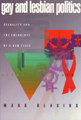

<body bgcolor="#FFFFFF" text="#000000" link="#0000FF" vlink="#CC0000" alink="#CC0000"><center><hr width="350" size="1" align="center" noshade>The making of gay and lesbian politics<hr width="350" size="1" align="center" noshade><p><a href="https://cdcshoppingcart.uchicago.edu/Cart/ChicagoBook.aspx?ISBN=9781566391733&&PRESS=temple" target="_top">Buy this book!</a> | <a href="https://cdcshoppingcart.uchicago.edu/Cart/Cart.aspx?PRESS=temple" target="_top">View Cart</a> | <a href="https://cdcshoppingcart.uchicago.edu/Cart/Cart.aspx?PRESS=temple" target="_top">Check Out</a></p><p></p></center><!--none//--><h1>Gay and Lesbian Politics</h1>
<H2>Sexuality and the Emergence of a New Ethic</H2>
<h3>Mark Blasius</h3>
<P>cloth 1-56639-173-3 $85.50, Oct 94, <FONT COLOR=#990033>Out of Stock Unavailable</FONT>
<br>paper 1-56639-174-1 $31.95, Oct 94, <FONT COLOR=#990033>Available</FONT>
<BR> 240 pp
5.5x8.25
2&nbsp;tables 2&nbsp;halftones
</P><BLOCKQUOTE><I>"This important study is both an analysis of and a call to an involved politics. It opens the door to a far-reaching dialogue."</I>
<br>&#151<b>Martin Duberman</b>, Center for Lesbian and Gay Studies, The City University of New York<I></I></BLOCKQUOTE>
<p>An active participant in and theorist of the gay and lesbian movement, Mark Blasius contends that being gay or lesbian is by definition political. By extension, the phenomenon of a movement founded on collective identity is a quintessential part of American politics. The continually rising public consciousness of the needs and interest of gays and lesbians provides Blasius with a vehicle for showing how a particular aspect of human life comes to assume political dimensions. Upon this premise, he analyzes the process of how power is exercised through sexuality and traces the historical conditions that have made possible a gay and lesbian politics
<p>Drawing on works of political philosophy, social science, including Foucault, and gay and lesbian studies, Blasius explores the invention of a gay and lesbian ethos, through which participation, even for apolitical gays and lesbians, goes beyond a shared culture and perspective. It is a way of life more encompassing than either sexual orientation or lifestyle alone. Though he acknowledges and reflects upon the divergent range of gay and lesbian experiences, Blasius provides a framework based on theories of power, sexuality, and ethics that elaborates the significance of the movement as a whole within contemporary society.
<BR>&nbsp;<h2>Reviews</h2>
<p><I>"It is in the process of coming out...Blasius argues, that lesbians and gay men create themselves&#151as new subjects, as the producers of new truth, and as agents of social change. Blasius gives a coherent account that ties together all these processes&#151from coming out to the emergence of lesbian and gay studies-and goes on to show the 'ethical' contribution that lesbians and gay men make to contemporary American society."</I>
<br>&#151<b><I>Harvard Gay & Lesbian Review</I></b>
<p><I>"An engaging book that intelligently explores a range of possibilities in human relations."</I>
<br>&#151<b>George Kateb</b>, Department of Politics, Princeton University
<BR>&nbsp;<h2>Contents</h2><P>
<p>Acknowledgments
<br>Introduction
<p>1. The Creation of Gay and Lesbian Politics
<br><I>A Historical Ontology of Politics &#149
Power, Subjectivity, and Truth &#149
Politics and Technologies of Government</I>
<p>2. A Politics of Sexuality
<br><I>Poser in Modernity: Biopower &#149
Sexuality Becomes a Political Issue &#149
Sexuality: A Technology of Government &#149
The Lesbian and Gay Politics of Sexuality</I>
<p>3. Sexuality, Subjectivity, and Political Identity
<br><I>A Genealogy of Gay and Lesbian Identity &#149
Erotics: From Subjection to Agency &#149
Silence = Death: Coming Out and the Creation of the Self &#149
Conclusion: After Sexuality, Erotics?</I>
<p>4. What Are Lesbian and Gay Rights?
<br><I>Sexuality and Normativity: A Relational Right &#149
AIDS and Biopower &#149
Conclusion</I>
<p>5. An Ethos of Lesbian and Gay Existence
<br><I>Lesbian and Gay Existence: Sexual Orientation, Lifestyle, and Community &#149
The Emergence of a Lesbian and Gay Ethos &#149
Ethos, Knowledge, and Politics &#149
Gay and Lesbian Politics and a New Ethic &#149
Conclusion</I>
<p>Index
</P><BR>&nbsp;<H2>About the Author(s)</H2>
<P><b>Mark Blasius</b>, Associate Professor of Political Science at City University of New York, LaGuardia, is the co-author of <I>We Are Everywhere: An Historical Sourcebook in Gay and Lesbian Politics</I>.</P>
<BR><H2>Subject Categories</H2>
<p><A HREF="/tempress/sexual.html" TARGET="_top">Sexuality Studies/Sexual Identity</a>
<BR><A HREF="/tempress/political.html" TARGET="_top">Political Science and Public Policy</a>
<BR><A HREF="/tempress/philosophy.html" TARGET="_top">Philosophy and Ethics</a>
</p>
<p align="center"><a href="https://cdcshoppingcart.uchicago.edu/Cart/ChicagoBook.aspx?ISBN=9781566391733&&PRESS=temple" target="_top">Buy this book!</a> | <a href="https://cdcshoppingcart.uchicago.edu/Cart/Cart.aspx?PRESS=temple" target="_top">View Cart</a> | <a href="https://cdcshoppingcart.uchicago.edu/Cart/Cart.aspx?PRESS=temple" target="_top">Check Out</a></p><p><font face="Arial" size="1"><a href="copyright.html" onMouseOver="window.status='Web Copyright Policy';return true;" onMouseOut="window.status=''" title="Web Copyright Policy">&copy;</a> 2015 <a href="http://www.temple.edu" target="new" onMouseOver="window.status='Link to Temple University home page';return true;" onMouseOut="window.status=''" title="Link to Temple University home page">Temple University</a>. All Rights Reserved. http://www.temple.edu/tempress/titles/901_reg.html</font></p>